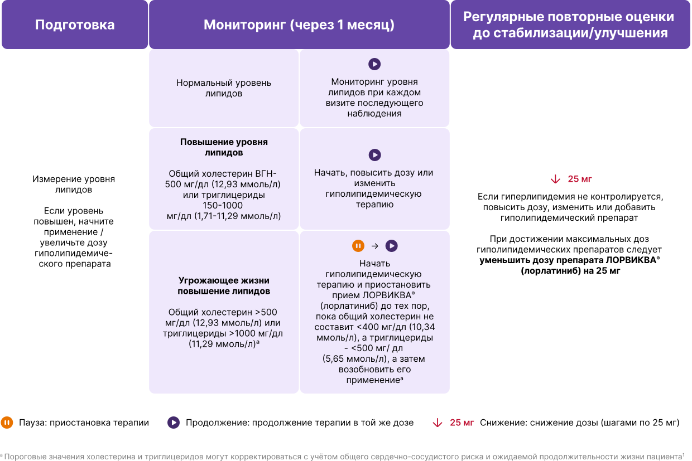
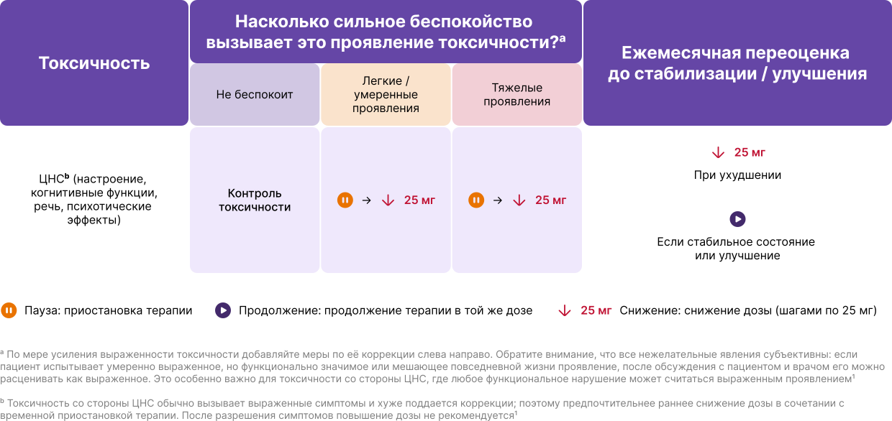
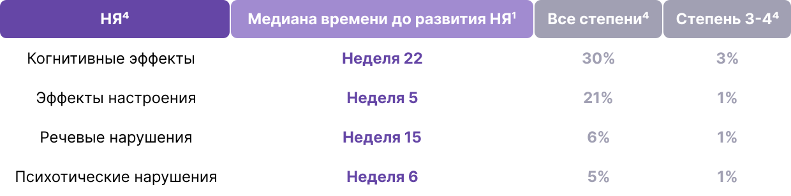
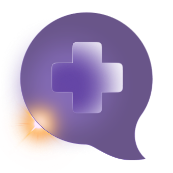
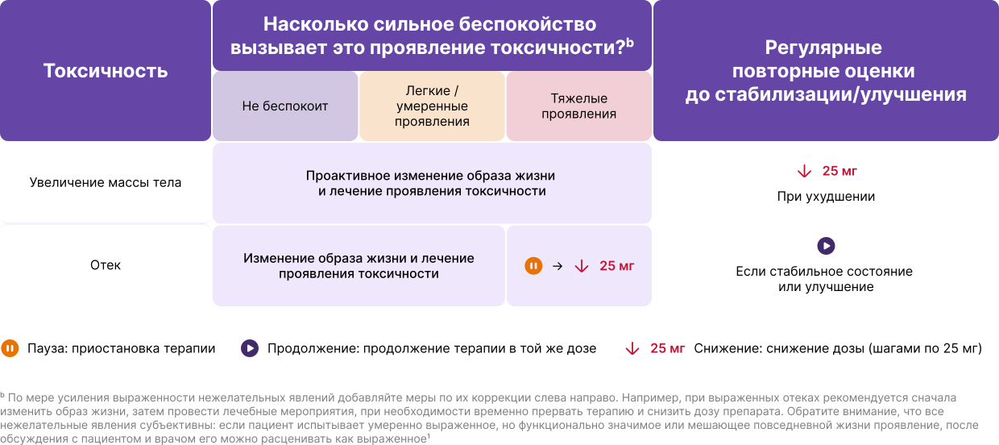
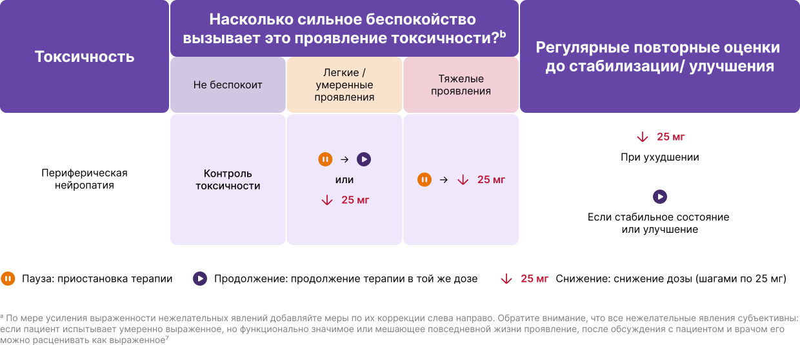

Управление терапией
Контроль НЯ с помощью 4 простых шагов7
Шаг 1
Подготовка
пациентов и ухаживающих лиц к тому, чего следует ожидать в процессе лечения препаратом ЛОРВИКВА®
Шаг 2
Мониторинг
НЯ, часто возникающих при применении препарата ЛОРВИКВА®, в начале терапии и при каждом визите в рамках наблюдения
Шаг 3
Контроль
вначале путем немедикаментозных подходов, затем приостановки терапии и, если потребуется, снижения дозы
Шаг 4
Повторная оценка
минимум один раз в месяц на предмет любых потенциальных и ожидаемых НЯ, а также необходимости коррекции дозы
Большинство НЯ можно эффективно контролировать при проактивном подходе к их ведению
Объясните пациентам и лицам, осуществляющим уход за ними, вероятность возникновения, сроки возникновения, симптомы и стратегии купирования возможных НЯ9
Поощряйте пациентов обращаться за помощью в наблюдении к лицам, осуществляющим за ними уход9
Чем раньше будут обнаружены НЯ, тем быстрее вы сможете вмешаться и помочь пациентам продолжать лечение (см. временную шкалу на соседней странице)9
Напомните пациентам, что прием более низкой дозы ЛОРВИКВА® — распространенный способ контролировать НЯ без снижения эффективности терапии6,9
ПРОАКТИВНОЕ УПРАВЛЕНИЕ НЕЖЕЛАТЕЛЬНЫМИ ЯВЛЕНИЯМИ МОЖЕТ ПОЗВОЛИТЬ ПАЦИЕНТАМ ДОЛЬШЕ ОСТАВАТЬСЯ НА ТЕРАПИИ2
Гиперлипидемия
Рекомендуемая тактика контроля гиперлипидемии1

Гиперлипидемия может контролироваться при помощи регулярного мониторинга и сопутствующей терапии7
в74%
случаев НЯ уменьшались или полностью разрешались при соответствующем ведении, включая применение гиполипидемических препаратов.
НЯ гиперлипидемии в большинстве случаев были 1–2 степени и, как правило, контролировались с помощью гиполипидемических препаратов2,6.
• Рекомендуется выбирать: розувастатин, питавастатин или правастатин7
• Следует избегать статинов, метаболизируемых через CYP3A46
Несмотря на более высокую частоту гиперлипидемии, частота сердечно‑сосудистых событий у пациентов с гиперлипидемией была ниже при применении ЛОРВИКВА® (лорлатиниб) по сравнению с кризотинибом (29% vs 50% при наблюдении 7 лет)2.

Во время разговора с пациентами:
Объясните, что увеличение уровня холестерина или триглицеридов является наиболее распространенным НЯ при приеме ЛОРВИКВА® (лорлатиниб), но они эффективно снижаются с помощью гиполипидемических препаратов1
Порекомендуйте пациентам обсудить со своими терапевтом, что они принимают правильный препарат (розувастатин, питавастатин или правастатин)1
Поскольку гиперлипидемия может не иметь клинических проявлений, пациенты и лица, осуществляющие уход за ними, должны понимать важность своевременного выполнения анализов крови в соответствии с рекомендациями врача1
Подходы к контролю гиперлипидемии
Немедикаментозные
Рекомендуйте пациентам соблюдать средиземноморской диеты10
медикаментозные
Выберите один из следующих статинов7,b:
Розувастатин
5–10 мг внутрь 1 раз в сутки для терапии средней интенсивности;
20–40 мг внутрь 1 раз в сутки для терапии высокой интенсивности.
Питавастатин
2 мг внутрь 1 раз в сутки
Правастатин
40 мг внутрь 1 раз в сутки
Добавьте эзетимиб, если гиперхолестеринемия сохраняется несмотря на проводимую терапию
Добавьте фибраты или рыбий жир, если уровень триглицеридов остается повышенным
Рассмотрите возможность направления пациента к кардиологу, если отмечается непереносимость статинов или отсутствие ответа на максимальные дозы гиполипидемической терапии7
Специалисты могут назначить ингибиторы PCSK9 или другие альтернативные гиполипидемические препараты
НЯ со стороны ЦНС
Рекомендуемая тактика контроля НЯ со стороны ЦНС1

Большинство нежелательных явлений со стороны ЦНС являются обратимыми, особенно при их раннем выявлении и своевременной коррекции терапии, включая модификацию дозировки1
у43%
пациентов наблюдались НЯ со стороны ЦНС и в основном имели 1–2 степень тяжести4*
Частота возникновения и распространённость не увеличивались с течением времени
в63%
случаев НЯ со стороны ЦНС уменьшались или полностью разрешались при коррекции дозы, сопутствующей терапии либо даже без медицинского вмешательства.
только у 3
пациентов (2%) терапия была окончательно прекращена из‑за НЯ со стороны ЦНС24
*Нежелательные явления со стороны ЦНС 3 степени наблюдались у 5,4% пациентов, а 4 степени — у 0,7%2


Во время разговора с пациентами и лицом, осуществляющем уход:
• Объясните, что симптомы могут быть незаметными на первый взгляд6.
• Старайтесь вовлекать родственников или ухаживающих, чтобы они помогали
замечать и сообщать врачу о первых признаках изменений, которые сам пациент
может не заметить6.
• Просите их сразу сообщать о любых изменениях, так как при раннем выявлении
такие нежелательные явления часто удаётся успешно скорректировать6.
Подходы к контролю к НЯ со стороны ЦНС
Немедикаментозные
Эффекты настроения
Рекомендуйте пациентам практиковать психотерапию, в том числе методы когнитивно-поведенческой терапии6
Когнитивные эффекты
Посоветуйте пациенту использовать календарь для напоминаний и организовать систему, чтобы важные вещи всегда лежали на одном месте11
медикаментозные
Коррекция дозы, включая временную приостановку терапии или снижение дозы7
При выраженных или устойчивых нарушениях настроения либо психотических проявлениях рекомендуется направить пациента к психиатру для возможного назначения сопутствующей терапии (например, антипсихотики, антидепрессанты)7
Коррекция дозы — эффективный способ контроля нежелательных явлений со стороны ЦНС, особенно при раннем выявлении.
Снижение дозы не снижало системную или интракраниальную эффективность терапии6.
Увеличение массы тела и отеки
Рекомендуемая тактика контроля увеличения массы тела и отеков1

Подготовка и раннее вмешательство — ключевые факторы успешного контроля увеличения массы тела3
Рекомендуется проактивно проводить профилактику увеличения массы тела3
Увеличение массы тела и отеки не приводили к отмене терапии ЛОРВИКВА® (лорлатиниб)4
Увеличение массы тела редко приводило к изменению дозы препарата (у 1% пациентов)1
Перед увеличением массы тела у некоторых пациентов могло наблюдаться непреднамеренное снижение веса из-за основного заболевания. Поэтому важно определить индивидуальный “здоровый” вес пациента, ориентируясь на показатели до постановки диагноза1.

При разговоре со своими пациентами:
• Объясните пациентам, что профилактика набора веса гораздо эффективнее, чем
попытки похудеть после его увеличения6
• Рекомендуется регулярно отслеживать изменения массы тела и начинать
коррекцию уже при увеличении веса на 5% относительно исходного (“здорового”)
веса до постановки диагноза7
Подходы к контролю увеличения массы тела и отеков
Немедикаментозные
Увеличение массы тела
• Рекомендуйте придерживаться низкокалорийного и сбалансированного рациона
(по возможности направьте пациента к диетологу или нутрициологу)6,13
• Рекомендуйте вести дневник питания, планировать меню заранее и выбирать
простые, полезные рецепты14
• Рекомендуйте регулярно заниматься физической активностью — использовать
приложения для отслеживания шагов или других видов активности13
Отек
Рекомендуйте использовать компрессионные изделия, поднимать поражённую область выше уровня сердца, увеличивать физическую активность, ограничивать потребление соли, проходить физиотерапию и делать лимфодренажный массаж7
медикаментозные
Увеличение массы тела
Любое применение препаратов для снижения массы тела должно осуществляться строго по утверждённым показаниям и под контролем специалиста, с учётом возможных побочных эффектов. В настоящее время нет данных о применении этих средств для коррекции увеличения массы тела, вызванного терапией ЛОРВИКВА® 7
Отек
Когда отёки и увеличение массы тела возникают одновременно, в первую очередь следует купировать отёки, чтобы определить, связано ли увеличение веса с задержкой жидкости7
Диуретики могут использоваться для контроля отеков по клиническим показаниям. Если отеки сохраняются, рекомендуется обратиться к профильным специалистам (например, кардиологу, эндокринологу и др.) для уточнения причин и поиска оптимальных решений7
Периферическая нейропатия
Рекомендуемая тактика контроля переферической нейропатии1

Периферическая нейропатия эффективно контролируется с помощью немедикаментозных методов1
Периферическая нейропатия, связанная с терапией ЛОРВИКВА®, обычно носит лёгкий характер и является обратимой1
Снижение дозы и прекращение терапии из-за периферической нейропатии отмечались у 3% и 1% пациентов соответственно1
Перед началом терапии пациента следует обследовать на наличие возможных причин периферической нейропатии (например, сахарного диабета), а затем регулярно переоценивать наличие признаков и симптомов на каждом визите контроля1

При разговоре со своими пациентами:
Рекомендуйте пациентам сообщать врачу о любых покалываниях, онемении или болях в пальцах рук и ног, особенно ночью7
Подходы к контролю периферической нейропатии
Немедикаментозные
Использование ночной шины может облегчить проявления синдрома запястного канала7
Периферическая нейропатия, связанная с отёками (особенно верхних конечностей), может уменьшаться при использовании компрессионных изделий, подъёме поражённой области выше уровня сердца, увеличении физической активности, ограничении потребления соли, прохождение физиотерапии и лимфодренажном массаже7
медикаментозные
Витамины B1 и B6, а также препараты, такие как габапентин или прегабалин, могут облегчить симптомы периферической нейропатии7
Общая характеристика лекарственного препарата


CYP3A4 – цитохром P450 3A4; PCSK9 – протеазный конвертаза субтилизин/кексин типа 9; НЯ – нежелательное явление; ЦНС – центральная нервная система.
Список источников:
1. Инструкция по применению лекарственного препарата для медицинского применения
Лорвиква® (Общая характеристика лекарственного препарата ЛП-009432 от 14.08.2025
г.).
2. Shaw AT, et al. Ann Oncol. 2026; doi:
https://doi.org/10.1016/j.annonc.2026.05.692
3. Shaw AT, Bauer TM, de Marinis F, et al; CROWN Trial Investigators. First-line
lorlatinib or crizotinib in advanced ALK-positive lung cancer. N Engl J Med.
2020;383(21):2018-2029.
4. Peters S, Camidge R, Dziadziuszko R, et al. Alectinib versus crizotinib in
previously untreated ALK-positive advanced non-small cell lung cancer: final overall
survival analysis of the phase III ALEX study. Ann Oncol. 2026;37(1):92-103.
5. Camidge DR, Kim HR, Ahn M-J, et al. Brigatinib versus crizotinib in advanced ALK
inhibitor–naive ALK-positive non–small cell lung cancer: second interim analysis of
the phase III ALTA-1L trial. J Clin Oncol. 2020;38(31):3592-3603.
6. Liu G, Solomon B, Mazieres J, et al. Kinetics and management of adverse events
associated with lorlatinib after 5 years of follow-up in the CROWN study.
Oncologist. 2025;30(10):oyaf287.
7. Liu G, Mazieres J, Stratmann J, et al. A pragmatic guide for management of
adverse events associated with lorlatinib. Lung Cancer. 2024;191:107535.
8. Liu G, Nadal E, Baijal S, et al. Impact of lorlatinib dose modifications on
adverse event outcomes in the phase 3 CROWN study. Presented at: ASCO 2025; May
30-June 3, 2025; Chicago, IL.
9. Pronsati N, Liu G, Bauer TM, et al. Managing lorlatinib together: an overview and
practical guide for patients by ALK-positive NSCLC patients and medical experts.
Lung Cancer. 2025;206:108662.
10. Ferro Y, Mazza E, Salvati M, et al. Effects of a Portfolio-Mediterranean diet
and a Mediterranean diet with or without a sterol-enriched yogurt in individuals
with hypercholesterolemia. Endocrinol Metab (Seoul). 2020;35(2):298-307.
11. Greenaway MC, Duncan NL, Smith GE. The memory support system for mild cognitive
impairment: randomized trial of a cognitive rehabilitation intervention. Int J
Geriatr Psychiatry. 2013;28(4):402-409.
12. U.S. Department of Health and Human Services. Common Terminology Criteria for
Adverse Events (CTCAE). Version 6.0. Washington, DC; 2025.
13. Centers for Disease Control and Prevention. Tips for keeping weight off.
Published November 15, 2023. Accessed March 19, 2026.
https://www.cdc.gov/healthy-weight-growth/losing-weight/keeping-it-off.html
14. National Cancer Institute. Weight changes, malnutrition, and cancer. Updated
October 15, 2024. Accessed March 19, 2026.
https://www.cancer.gov/about-cancer/treatment/side-effects/appetite-loss